猫との何気ない毎日を、
一生の思い出に。
写真を選ぶだけで、出会った日から今日までの「これまで」ができあがる。年齢・一緒に暮らした日数・年、3つの時間軸で振り返るiPhoneのアルバムアプリです。
App Storeで入手 iPhone（iOS 17以降）・無料・アカウント登録なし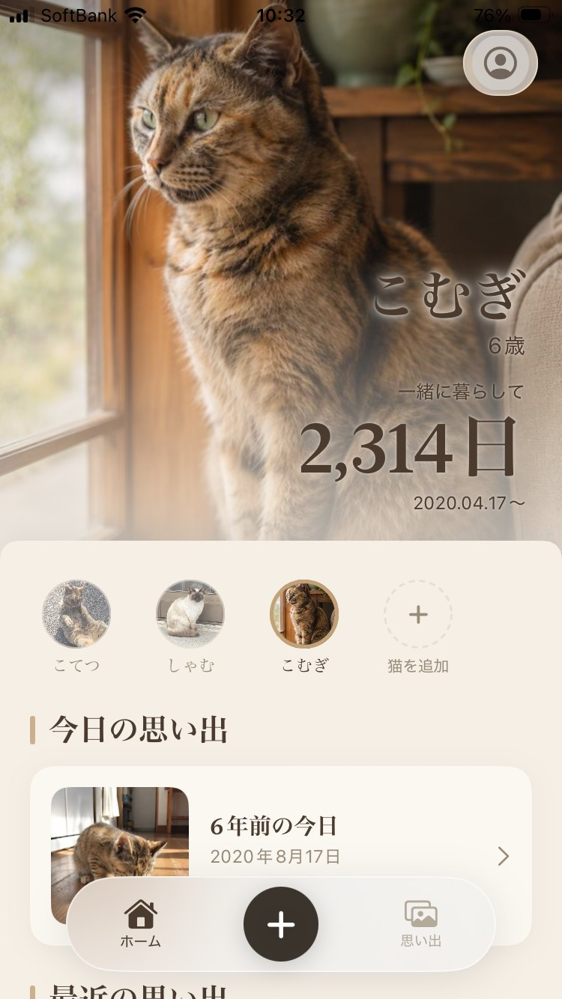
子猫だった日も、今日も、ひとつの線の上に
出会った日を1日目として、写真が時間の順に並びます。同じ1枚を「年齢」「一緒に暮らした日数」「年」の3つの時間軸で振り返れて、節目はアプリが自動で立ててくれます。誕生日がわからない子も、だいたいの時期から年齢を出せます。
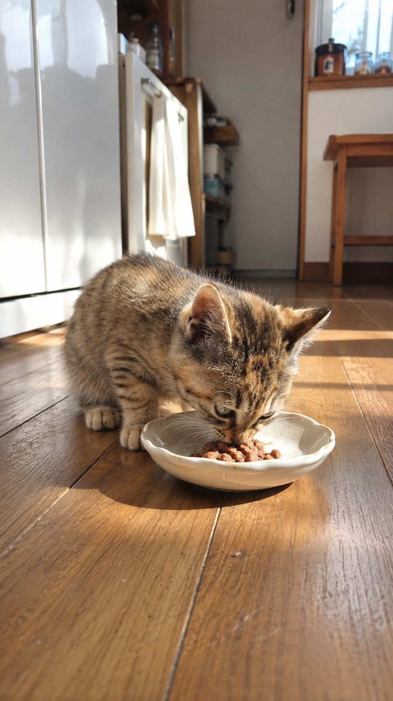
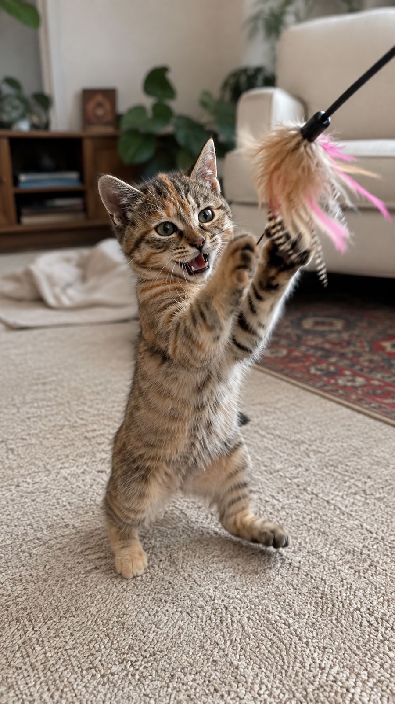
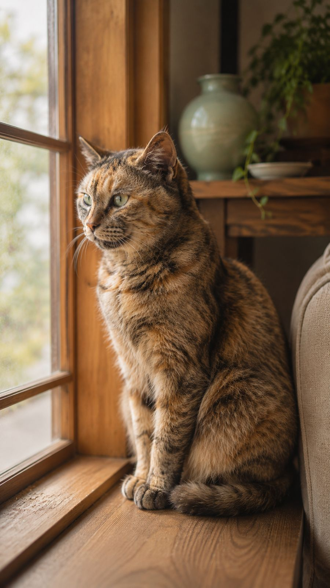
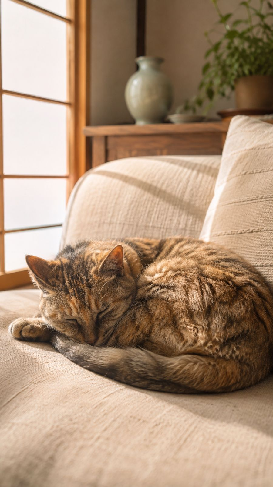
記録させるアプリではなく、返してくれるアプリ
毎日開かなくても大丈夫。写真が増えるほど、アプリのほうから思い出を返してくれます。
「◯年前の今日」
今日と同じ日付の思い出を、ホームとウィジェットに。記録が増えるほど、開くのが楽しみになります。
節目のお知らせ
一緒に暮らして100日、365日、1000日……。ふだんは意識しない節目を、当日の朝にそっと。通知はいつでもオフにできます。
思い出カード
写真に日付や年齢を添えて、8種類のデザインで1枚のカードに。家族や友だちに送れます。
スライドショー
これまでの写真がゆっくり動く、あの子だけの上映会。章立てで、人生を順に。
声も残せる
なき声をアプリの中に。ホーム画面の写真を撫でると、鳴いて応えてくれます。
ウィジェット
一緒に暮らした日数と今日の思い出を、ホーム画面とロック画面に。アプリを開かなくても。
多頭飼いにも
猫ごとにアルバムを分けて残せます。無料で2匹まで、3匹目からはPremiumで。
お別れのあとも
お別れの日を記録すると、年齢と日数はその日で止まります。思い出はそのまま、いつでも会いに行けます。
「選択した写真のみ」でも
写真ライブラリ全体を渡さなくても使えます。あとから写真を足すのも簡単です。
写真が主役の、静かな画面
アルバムをめくるように。ビビッドな色も、ゲームのような演出もありません。
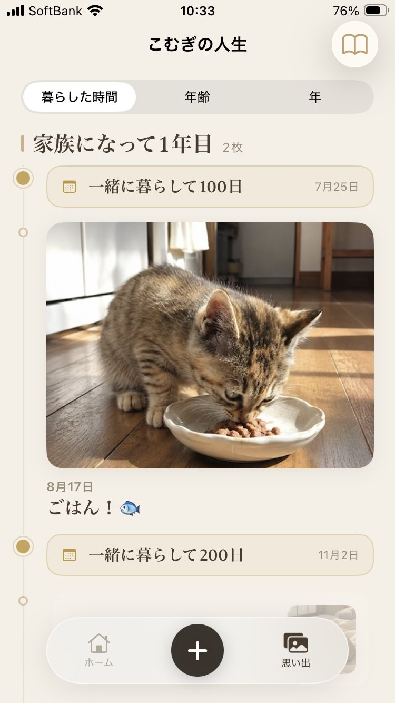
暮らした時間・年齢・年で切り替え
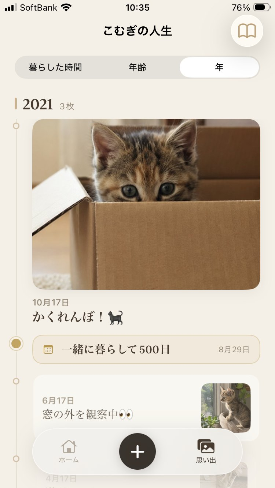
あの年の、あの季節
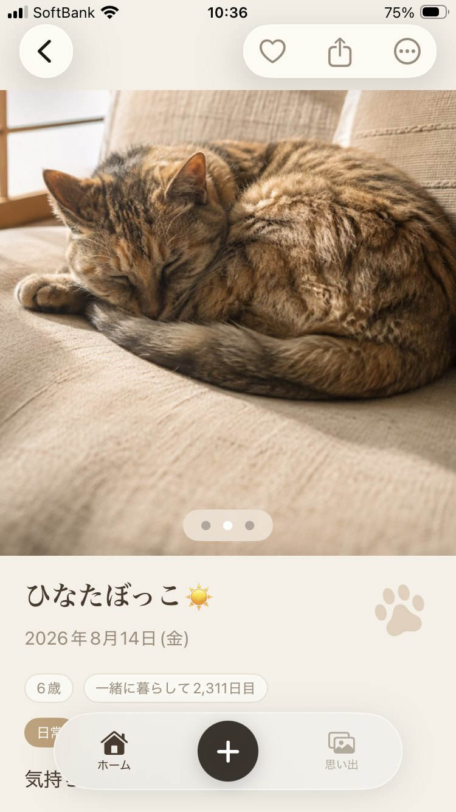
年齢と日数が、いつも一緒に
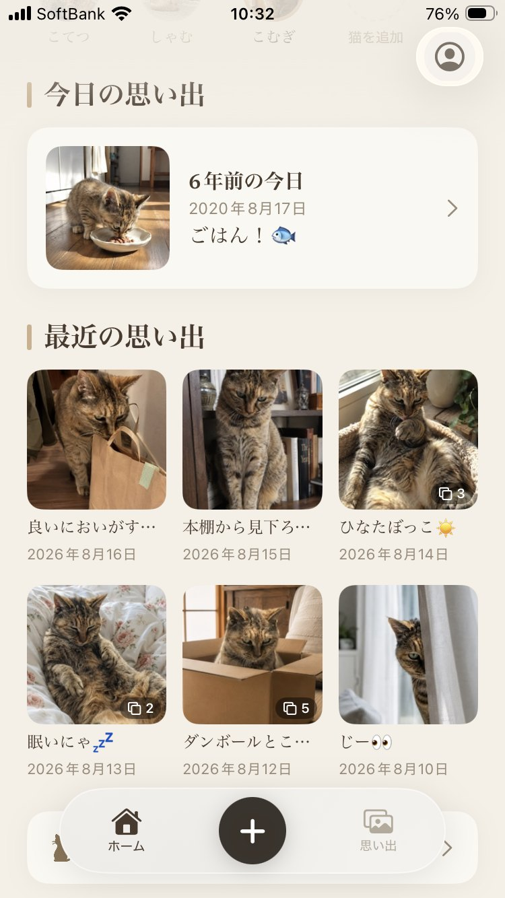
アプリのほうから返してくれる
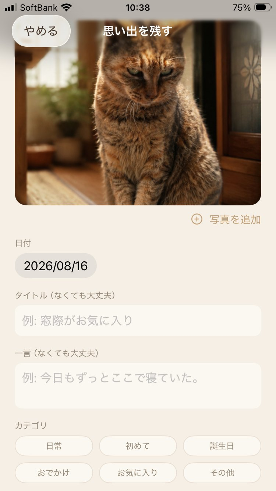
一言だけでも、なくても
特別じゃない日こそ、あとで効いてくる
ごはん、ひなたぼっこ、段ボール。撮ったときは何でもなかった1枚が、数年後の「今日」に返ってきます。
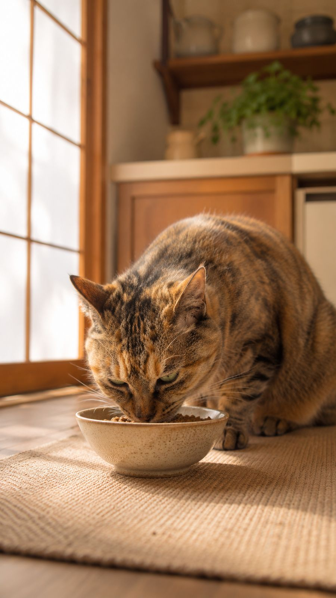
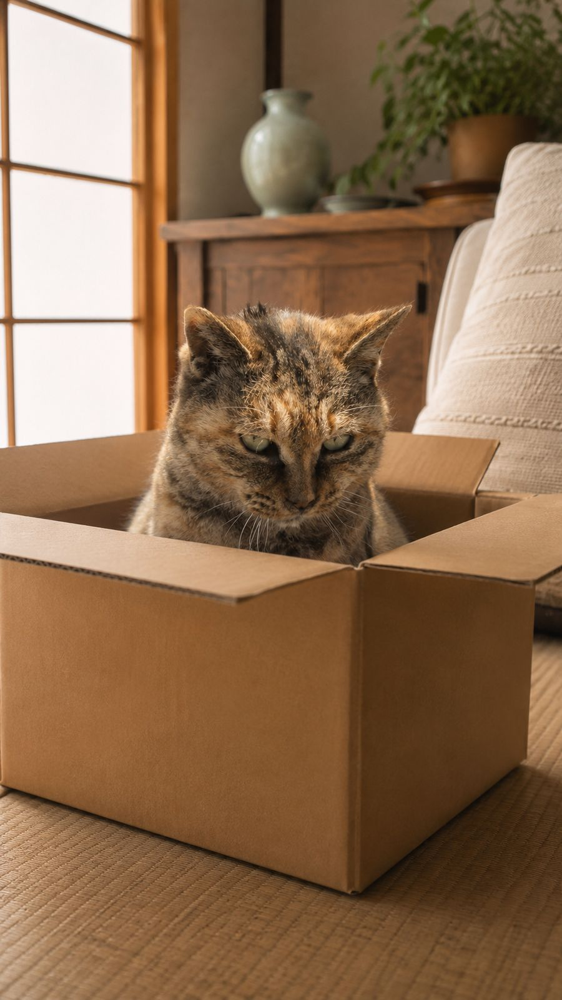
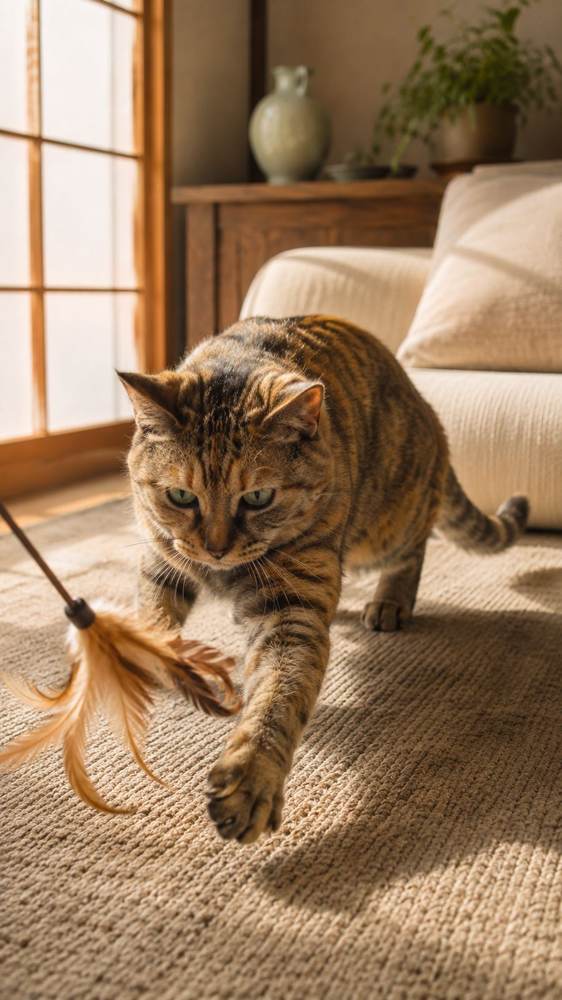
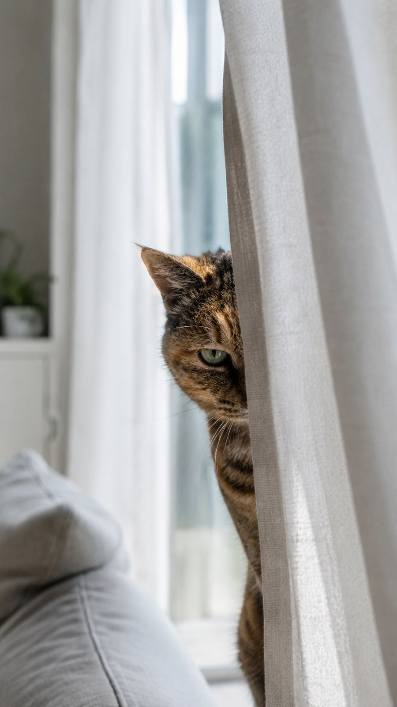
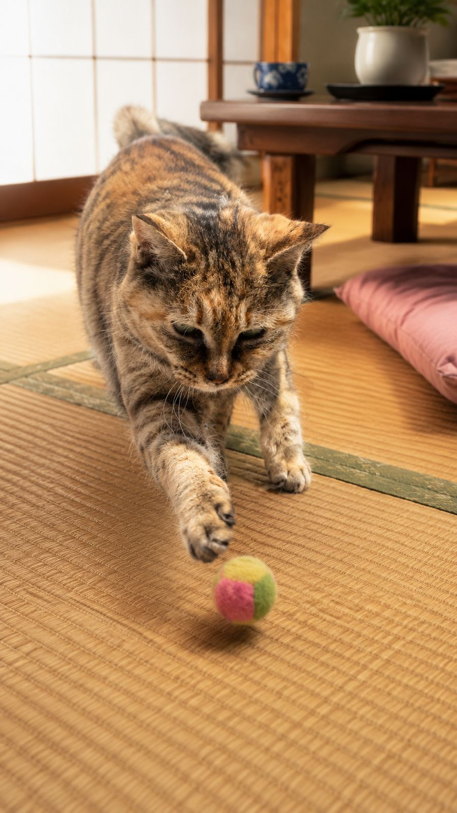
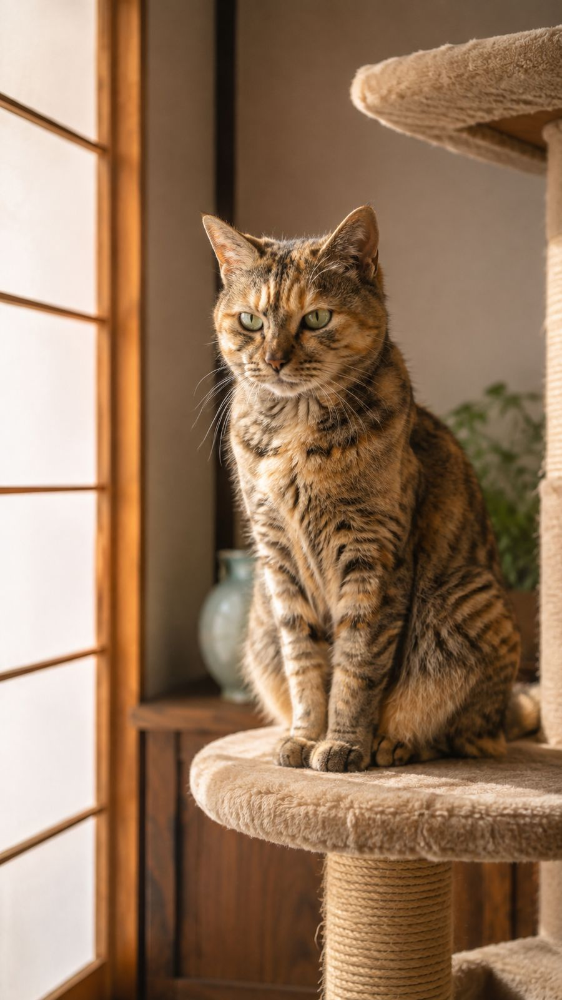
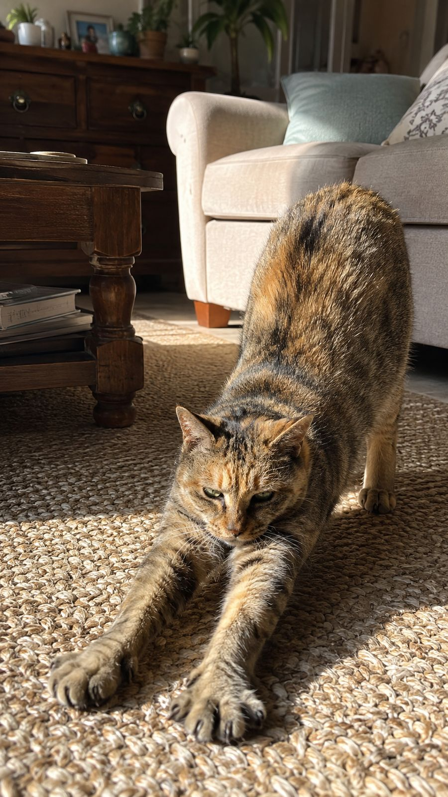
写真は、あなたのものです
- 写真と記録は、あなたのiPhoneとあなたのiCloudにだけ保存されます。開発者が見ることはできません。
- アカウント登録は不要。広告もありません。
- 機種変更しても、同じApple AccountでiCloudから戻ってきます。
- 利用状況の分析データも、現在は一切送信していません。
よくある質問
写真はどこに保存されますか？
あなたのiPhoneの中と、あなた自身のiCloud（プライベートデータベース）にだけ保存されます。開発者のサーバーには送られません。
機種変更したらデータは戻りますか？
同じApple AccountでiCloudにサインインしていれば、新しいiPhoneでアプリを開くと自動で戻ってきます。写真の枚数によっては数分かかることがあります。
iCloudを使っていなくても使えますか？
使えます。その場合データはiPhoneの中にだけ保存されるので、機種変更やアプリの削除で失われることがあります。大切な記録にはiCloudの有効化をおすすめします。
Premiumを買い直す必要はありますか？
ありません。同じApple Accountなら、機種変更や再インストールのあとも自動で戻ります。戻らないときは アプリの設定 → デザインテーマ →「購入を復元する」からどうぞ。
「選択した写真のみ」の許可でも使えますか？
使えます。あとから写真を追加したいときは、アプリ内の写真選択画面から追加できます。
誕生日がわからない猫でも大丈夫ですか？
大丈夫です。「家族になった頃、何歳くらいだったか」から、だいたいの誕生日を出して「◯歳ごろ」と表示します。断定できないことは、断定しません。
iPadやAndroidでは使えますか？
iPhone専用です（iOS 17以降）。iPadではiPhone用アプリとして拡大表示で動作します。Android版の予定はいまのところありません。
お問い合わせ
不具合のご報告・ご意見・ご要望は、お気軽にどうぞ。
個人で開発しているので、返信に少しお時間をいただくことがあります。
アプリ内からも送れます: アプリの設定 →「ご意見・ご要望をおくる」